Kevin Chu · Fall 2026
Fun with Flow Models
A flow model makes a picture by starting from pure noise and nudging it, a little at a time, until it turns into a real image. In Part A I played with a big pretrained model to see how that works and what you can do with it, and in Part B I built and trained a small one myself on handwritten digits.
Part A
Exploring the Power of Flow Models
Visualizing Training and Sampling
The model I used is PixNerd, which was already trained, so Part A is all about using it. The one idea everything here builds on is a straight line between noise and an image. I write the noise as ε and the clean image as x, and for any time t between 0 and 1 the in-between image is xt = (1 − t) · ε + t · x. At t = 0 it's pure noise, at t = 1 it's the clean image, and the model's job is to look at a noisy image and predict which way to move it to get closer to the real picture. That direction is called the velocity.
1.1 Constructing Noisy Training Inputs
I used a photo of a squirrel I took in Yosemite, and mixed it with one fixed noise pattern at three different times, so the only thing changing is how much noise gets mixed in. At t = 0.25 it's 75% noise and you can barely tell there's a squirrel at all, while at t = 0.75 it's only 25% noise and most of the photo is back.
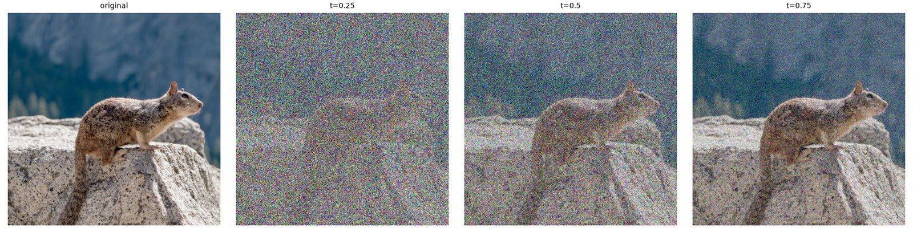
1.2 Classical Denoising
Before using the model, I tried cleaning up the noise the old-fashioned way. Since mixing in noise also dims the image by a factor of t, I first scale it back up by 1/t, then apply a Gaussian blur, trying a few blur sizes and keeping whichever one ends up closest to the original at each t. It helps a bit, but blurring can't tell noise apart from real detail, so it smears out the fur and rock along with the noise, and at t = 0.25 it's mostly colorful mush.
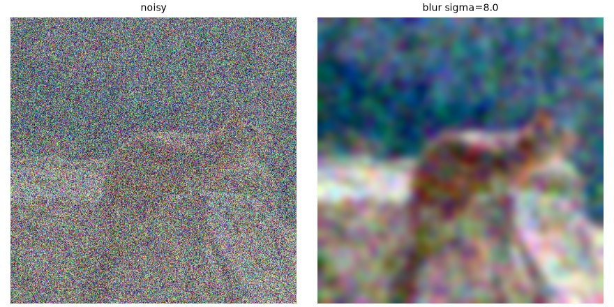
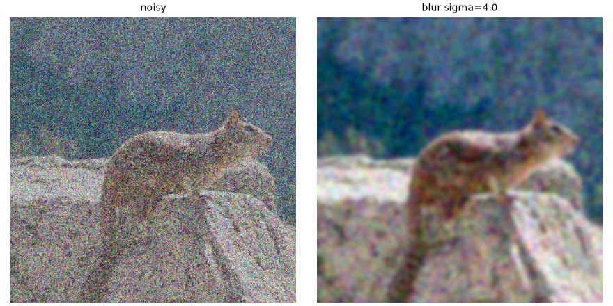
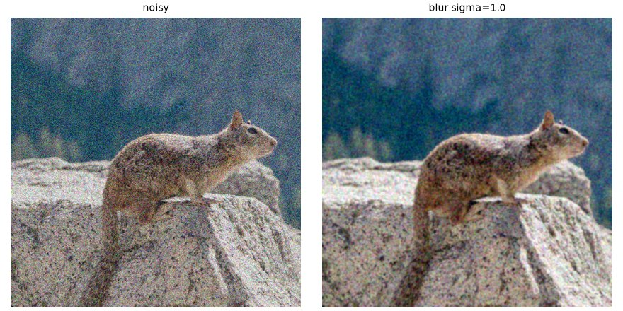
1.3 One-Step Denoising
Next I used the model with the prompt "a high quality photo". I can use its predicted velocity to jump all the way to t = 1 in one move: x̂ = xt + (1 − t) · v. This is way better than the blur, and the squirrel comes back clearly even at t = 0.25. It still looks soft, though, especially around the fur. A single jump keeps the initial velocity fixed instead of updating it as the image changes, so it misses detail that the smaller steps can recover.
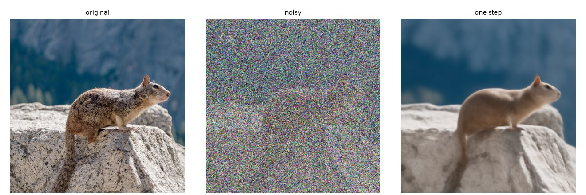
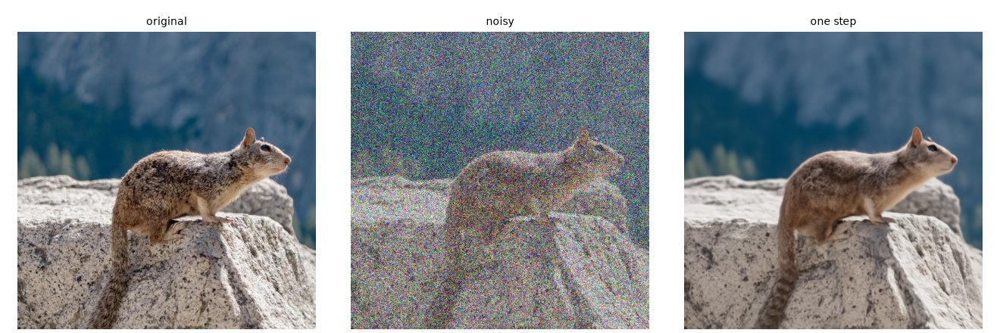
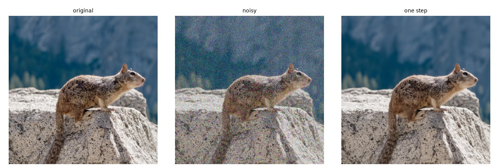
1.4 Visualizing Velocity
Here I compare the update the model predicts with the update that would land exactly on my photo. Gray means no change in the middle two panels, and brighter colors in the last panel mean a bigger error. I kept the scales the same across all three times so they're easy to compare. The two updates look pretty similar, but the model misses more of the granite speckles and fur than the blurred background. The error gets smaller as t goes up.
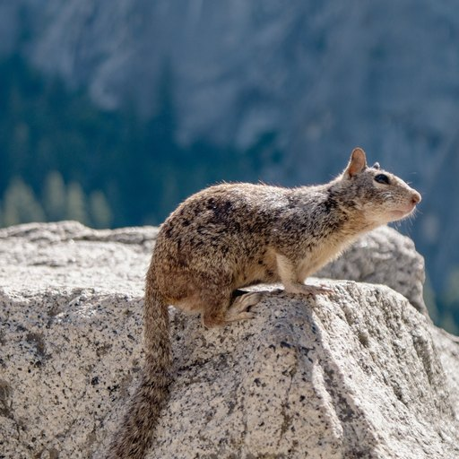
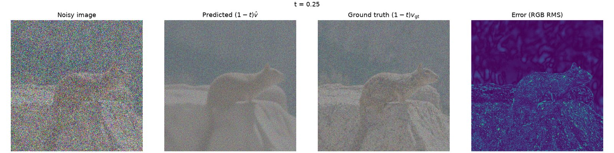
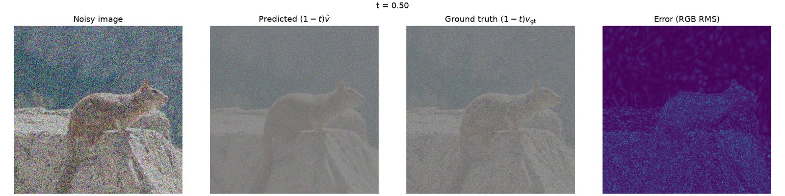
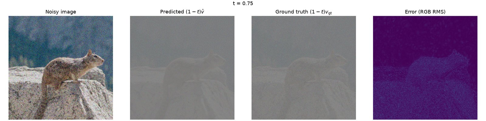
1.5 Iterative Denoising with Euler Sampling
Instead of one big jump, Euler sampling takes many small steps (step size 0.02), asking the model for a new velocity each time, and shortening the last step so it lands exactly on t = 1. Starting from the t = 0.5 image, the noise slowly clears up over 25 steps, and the grid shows the start, every fifth step, and the end.
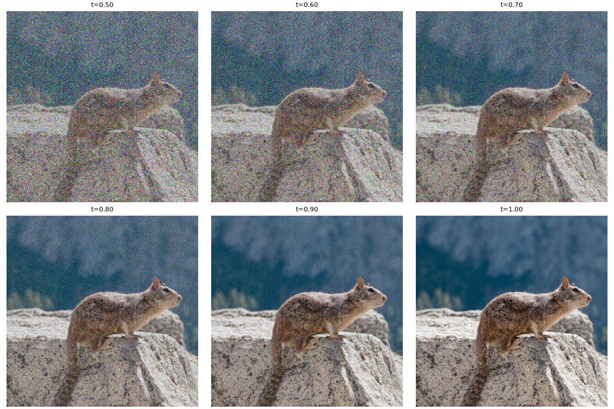
Side by side with the blur from 1.2 and the one-step guess from 1.3, all starting from that same noisy image, the Euler result brings back much more of the fur and rock texture. Funny enough, the one-step version is still closer to my original by pixel error. The Euler result fills in detail that looks right, but isn't exactly the detail that was there.
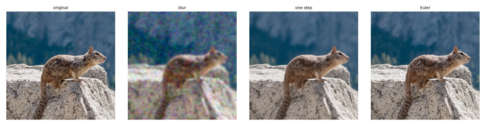
1.6 Generating Images from Noise
If I start from pure noise at t = 0, the same sampler makes brand new images. With the prompt "a high quality photo", four of the five came out as portraits, so faces were definitely a theme here. They're also kind of rough without any guidance, like the first guy's scrunched-up face, and one of them isn't even a person, just a weird cardboard shape.
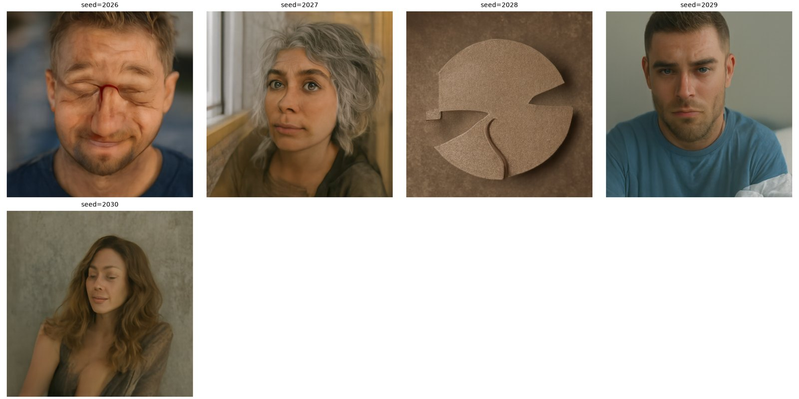
Conditional Generation and Guidance
2.1 Classifier-Free Guidance (CFG)
To make the images actually follow the prompt better, I ask the model for two velocities at every step, one with my prompt and one with an empty prompt, and push further in the direction the prompt adds: v = vc + w · (vc − vu) with w = 7. Using the same starting noise as before (seeds 2026 to 2030 again), the difference is huge, and all five are now clean, sharp portraits, even the one that was a cardboard shape before. In this batch, the extra guidance improves the faces but also makes the subjects less varied, since now every single one is a portrait.
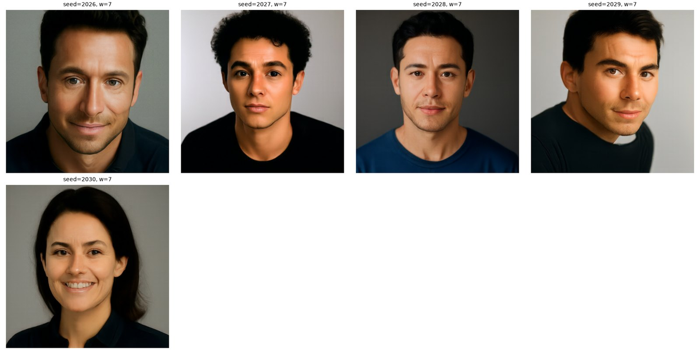
Creative Applications
3.1 Image-to-Image Editing
To edit a picture, I add noise back to it up to some time t, then let the guided sampler finish the rest. The smaller t is, the more noise there is and the more the model gets to make up, while a larger t keeps more of the original. All the creative applications use Euler step size 0.02, CFG weight w = 7, and an empty prompt for the unconditional prediction. For 3.1, the conditional prompt is "a high quality photo". Within each grid I reuse one noise pattern, so only the amount mixed in changes, from 98% noise at t = 0.02 down to 50% at t = 0.5. I used seed 180 for my images and seed 2026 for the Campanile.
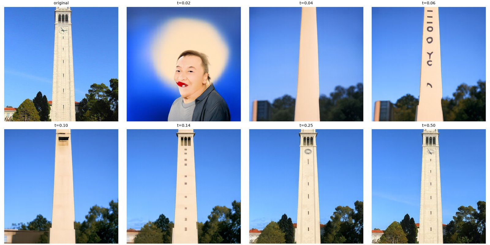
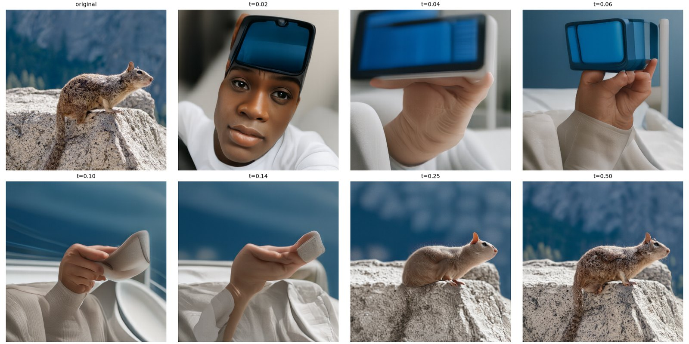
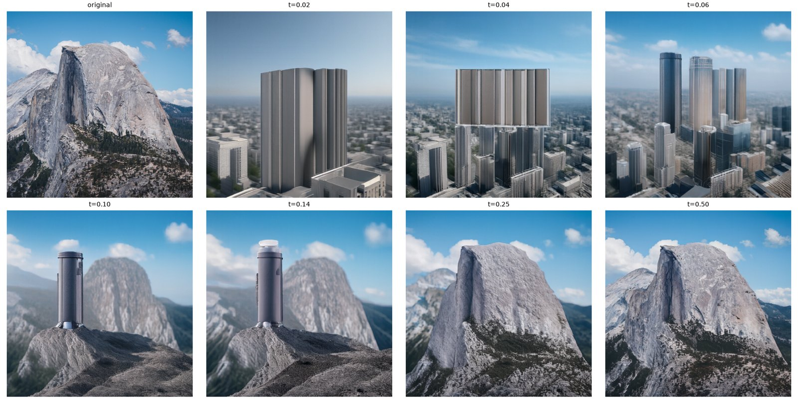
Editing a web image
For the web image, I used a cartoon red car and edited it with the same "a high quality photo" prompt. At t = 0.02 it becomes a real red sports car that mostly keeps the color and white background. Around t = 0.04 to 0.06, it still looks like a real car but now faces the same way as the cartoon. By t = 0.10 to 0.14 it looks more like a shiny toy, and by t = 0.5 it's basically the original cartoon again.
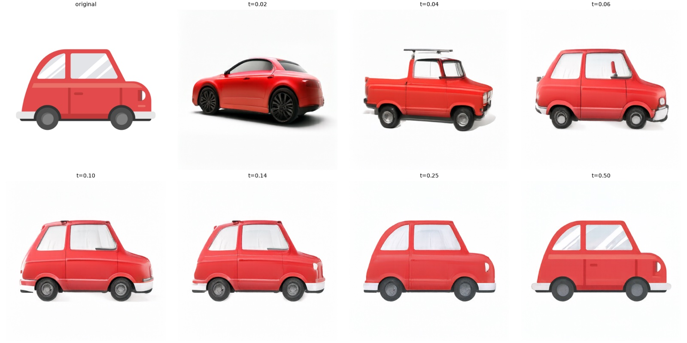
Editing my own drawings
I drew a self-portrait and a mountain landscape and edited both with the same "a high quality photo" prompt. The self-portrait turns into a photo of a guy at t = 0.04 while keeping my black hair, light blue shirt, and blue background. This fits with the portraits the model kept making in 1.6 and 2.1: even without a more specific prompt, it does a good job turning the drawn face into a realistic one.
The mountain drawing doesn't make that same jump to a photo. At small t, the model makes up unrelated things like a computer screen, a pink box, or a person. By around t = 0.06, it mostly copies the drawing instead. Here, adding more noise loses the landscape, while keeping more of the input also keeps its flat, cartoon style.
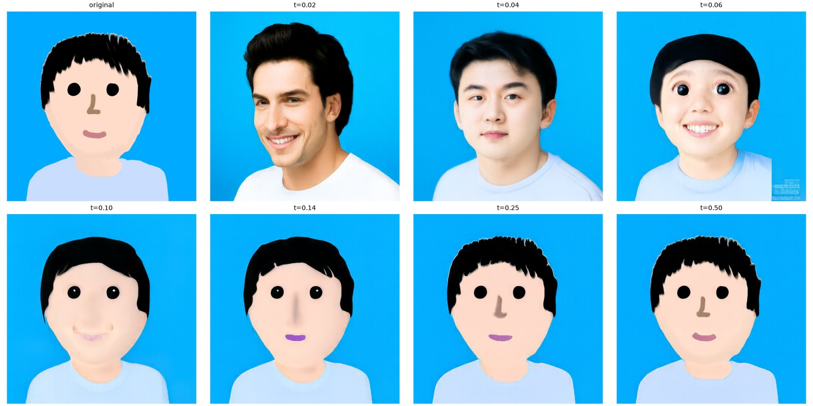
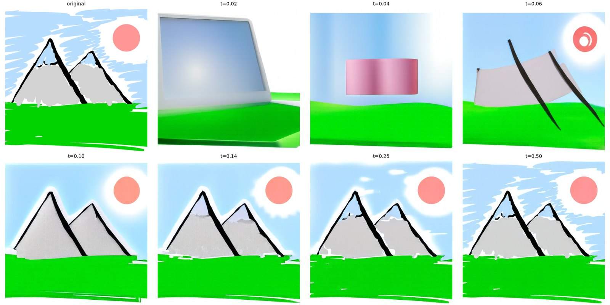
3.2 Text-Guided Image Editing
Same idea, but now I give it a real prompt. At small t the prompt mostly wins, and at large t it's basically the original again, but the fun part is in the middle, where the edit follows the layout of my photo. My favorite is the fox at t = 0.10 to 0.14, which keeps the squirrel's spot on the rock even though its pose changes.
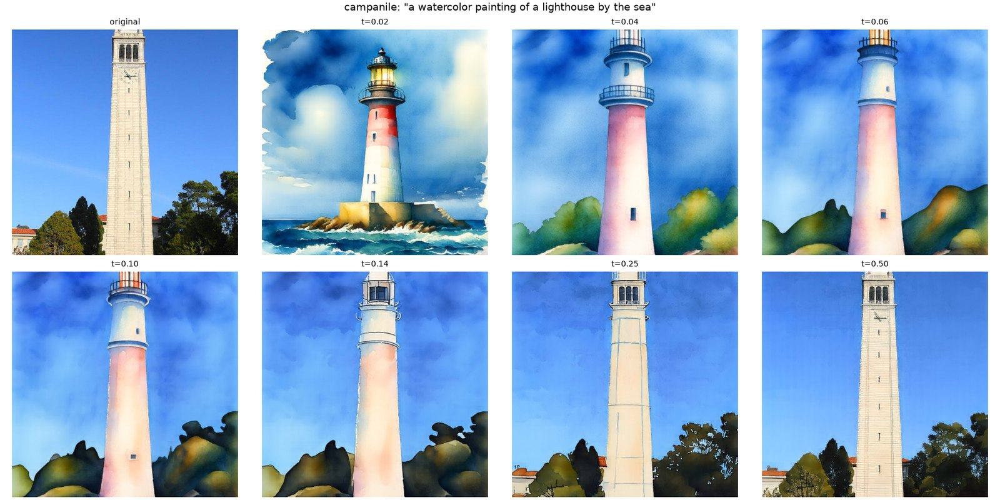
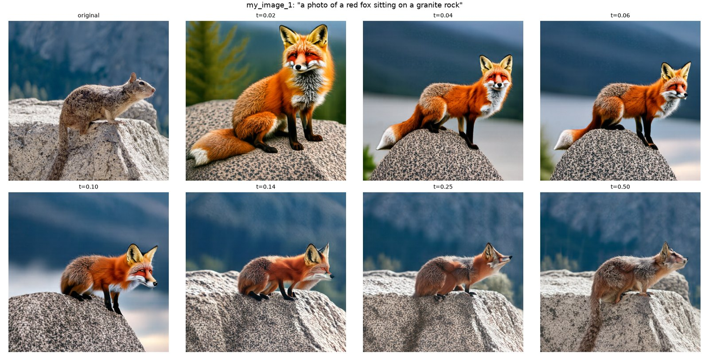
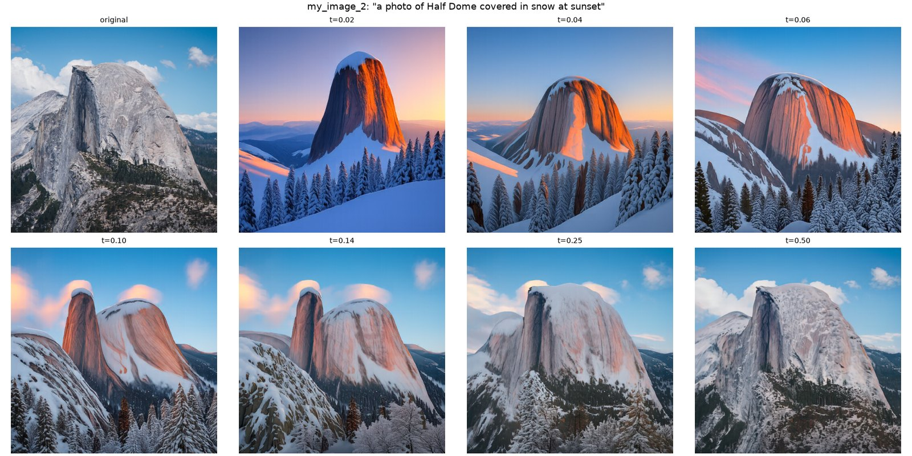
3.3 Visual Anagrams
A visual anagram looks like one thing right side up and something else upside down. At every step I get the guided velocity for prompt A on the image, and for prompt B on the image rotated 180° (then rotate that velocity back), and average the two, so the image has to make sense both ways. I tried a bunch of pairs and seeds and kept these two. The wave and mountain share blue and white shapes, while the hummingbird and tennis player use the same shapes for very different poses.
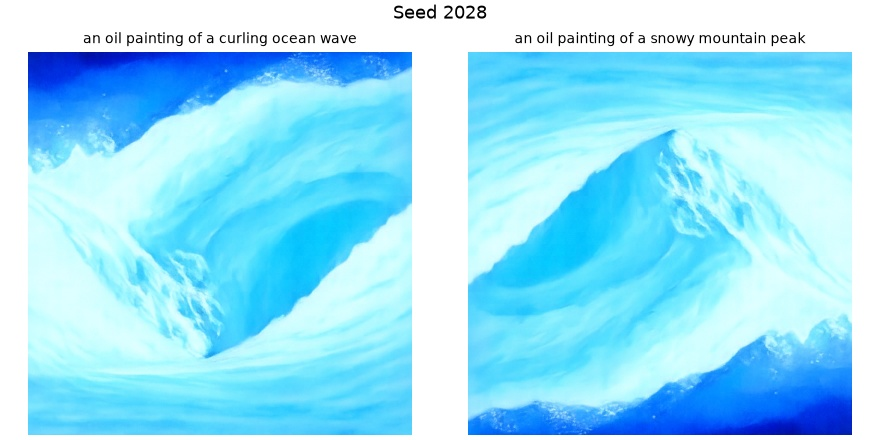
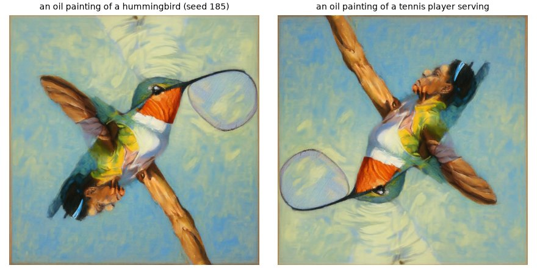
3.4 Hybrid Images
This is like the hybrid images from Project 2, except the model makes them from scratch. At every step I take the blurry (low-frequency) part of one prompt's velocity and the detail (high-frequency) part of the other prompt's velocity, and add them, so the big shape follows one prompt and the fine texture follows the other. To get the high-frequency part, I subtract the blurred velocity from the original. Like before, look at the big image, then at the smaller copies (seeds 183 and 184).
A tennis racket made of spider web
Far away: "a lithograph of a tennis racket". Up close: "a lithograph of a spider web".
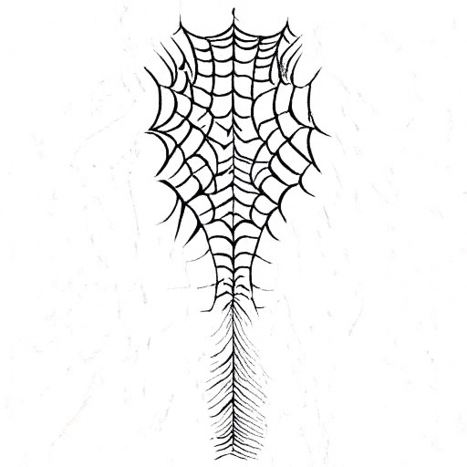
A guitar made of a city
Far away: "a lithograph of an acoustic guitar". Up close: "a lithograph of a huge sprawling city seen from far away, thousands of tiny buildings and windows". My first tries with a normal city or skyline didn't work, because big buildings show up in the blurry part too and the guitar disappeared. Asking for tiny buildings kept the city in the fine details.
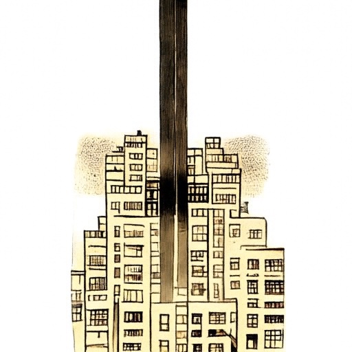
Up close you see the web strands and the windows, and once the image is small those details blur out and you see the overall racket and guitar shapes.
Part B
Flow Matching from Scratch!
Training a Single-Step Denoising UNet
1.1 Implementing the UNet
For Part B I built everything myself and trained it on MNIST, the dataset of handwritten digits. The network is a UNet, which shrinks the image down to a tiny summary and then builds it back up, with skip connections that pass the fine details straight across from the shrinking side to the growing side. Before doing any flow matching, I started with a simpler job: take a noisy digit and clean it up. I used seed 2026 to initialize the models and kept the test examples and sampling noise fixed for the epoch comparisons.
1.2 Using the UNet to Train a Denoiser
Here I add noise as z = x + σ · ε, where ε is random Gaussian noise and σ controls how strong it is. I keep each digit and its noise pattern the same across the row, so the only thing changing is the noise strength. As σ goes up, the strokes get harder to pick out.
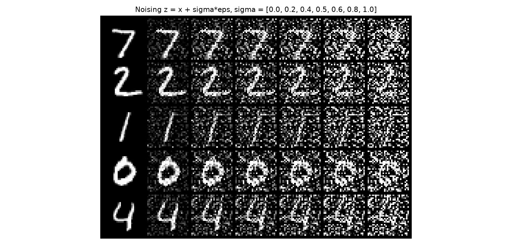
1.2.1 Training
I trained the UNet to turn digits with σ = 0.5 noise back into clean digits, drawing fresh noise every batch so it gets different noisy inputs each epoch. The loss measures how far the output is from the clean digit, and it drops fast before gradually leveling off. On the test digits below, it already cleans things up pretty well after one epoch, while by epoch five they're sharper.
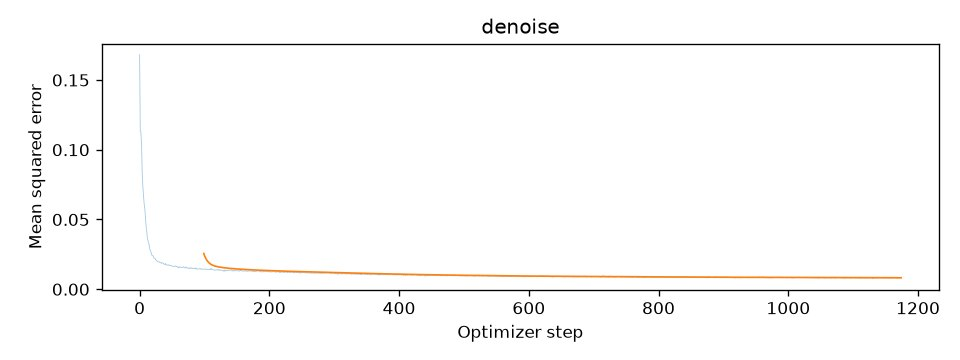
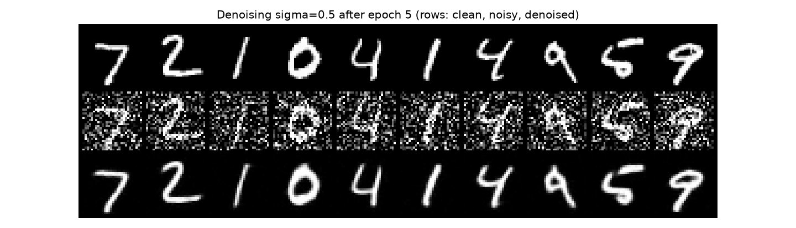
1.2.2 Out-of-Distribution Testing
The model only ever saw σ = 0.5, so I tested three test digits (a 7, a 2, and a 0) at other noise levels, keeping the same noise pattern for each digit. All three come out clean up to around 0.6, but at 0.8 and 1.0 it starts leaving smudges and extra strokes, since it's never seen that much noise before.
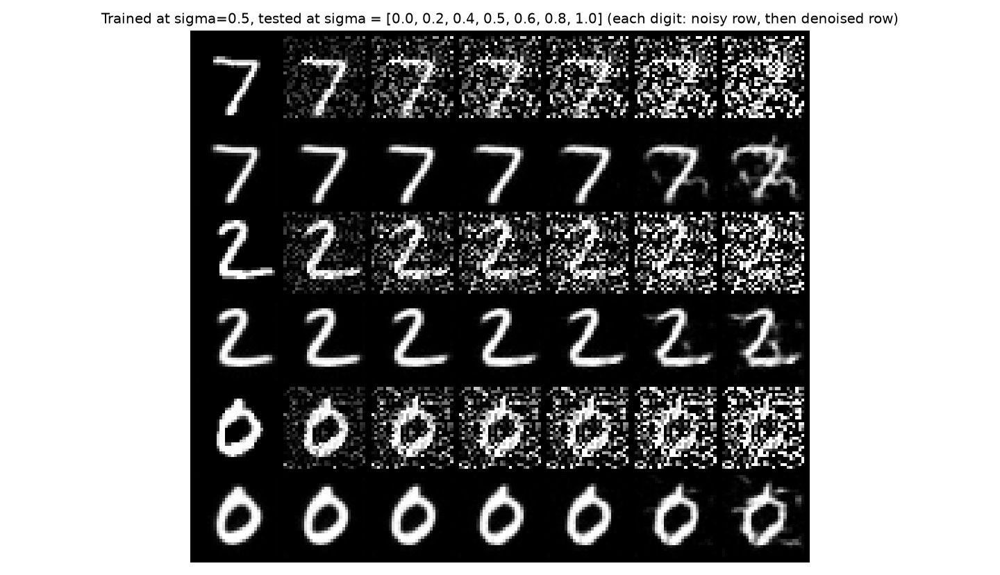
1.2.3 Denoising Pure Noise
Then I trained a fresh UNet where the input is pure noise with nothing of the digit in it. Every output comes out as the same blurry blob, no matter what noise goes in. Since the input tells the model nothing about which digit it should be, the best it can do to keep the squared error low is output the average of all the training digits, which is why the blob looks like a mix of a 0, 8, and 9 stacked on top of each other. So this one-step MSE setup doesn't learn to generate different digits from noise. Flow matching gives it a different training target and a sequence of smaller steps.
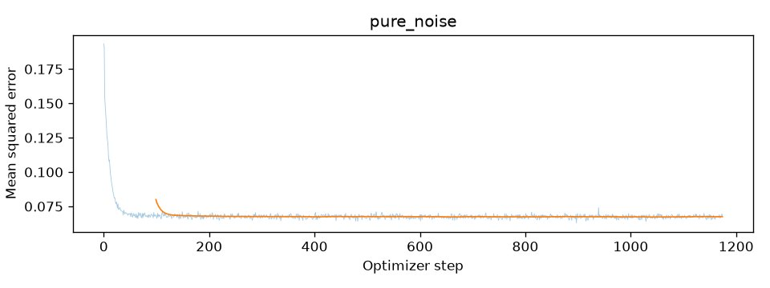
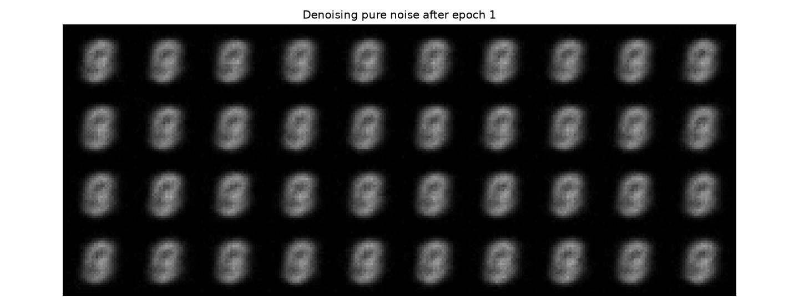
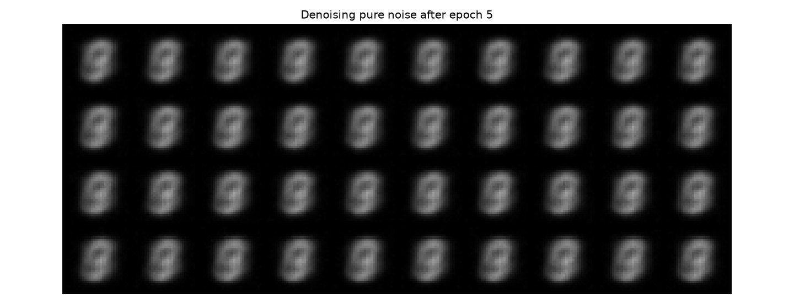
Training a Flow Matching Model
Flow matching fixes that by not jumping straight to the answer. It uses the same straight line as Part A, going from noise at t = 0 to a clean digit at t = 1, xt = (1 − t) · x0 + t · x1 where x0 is noise and x1 is a real digit, and trains the UNet to predict the velocity x1 − x0 at a random time t. To make a new digit, I start from noise and take small Euler steps along the predicted velocity until t = 1, just like in Part A.
2.1 Adding Time Conditioning to UNet
The UNet needs to know what time t it's at, since a nearly clean image and a very noisy one need different moves. I pass t through two small fully connected blocks, then multiply the results into features at two points on the upsampling side. That lets the same network change its prediction depending on how far the image is along the path from noise to a digit.
2.2 Training the UNet
For each batch of training digits, I draw fresh noise and a random time for each image, then mix the noise and digit at that time. The target is the velocity x1 − x0, and the loss is the mean squared difference between that target and the model's prediction. I trained for ten epochs using only the training split. The samples in the next section reuse the same starting noise, so the changes come from the model learning.
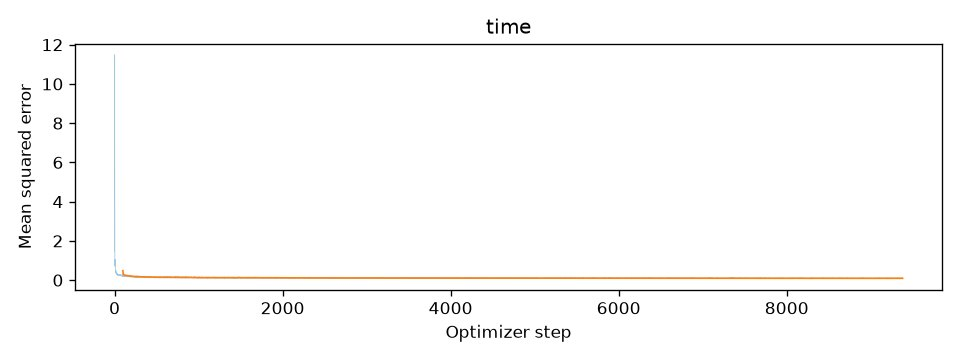
2.3 Sampling from the UNet
After one epoch the samples are mostly scribbles, by epoch five a lot of them look like digits, and by epoch ten most are readable, though some are still wobbly or don't look like any digit in particular.
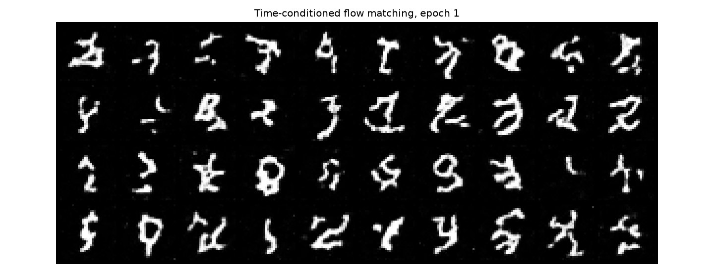
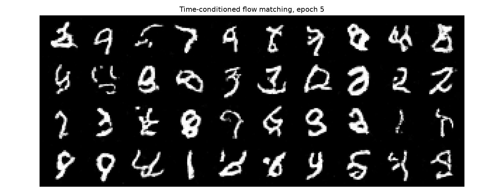
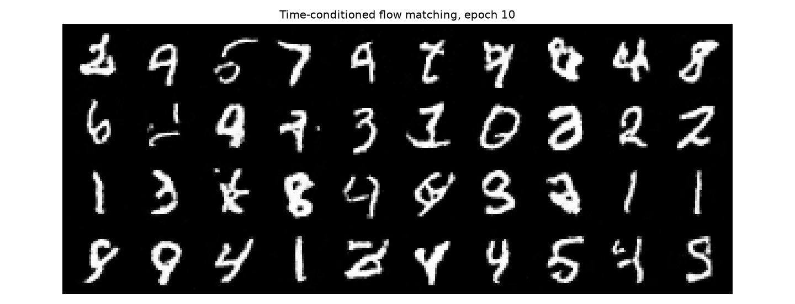
2.4 Adding Class-Conditioning to UNet
To pick which digit I get, I also feed the model the class as a one-hot vector: ten entries, all zero except for a 1 at the requested digit. Two more fully connected blocks turn that label into features that scale the upsampling features, while the time features are added. During training I blank out the label 10% of the time, so the model also learns to work without a class. That lets me use classifier-free guidance again when sampling.
2.5 Training the UNet
I trained this model for ten epochs too, drawing fresh noise and random times just like the time-only model. The target is still the velocity from noise to the clean digit, but now the model also gets the digit label unless it is dropped for that training example. Here's how the training loss changed.
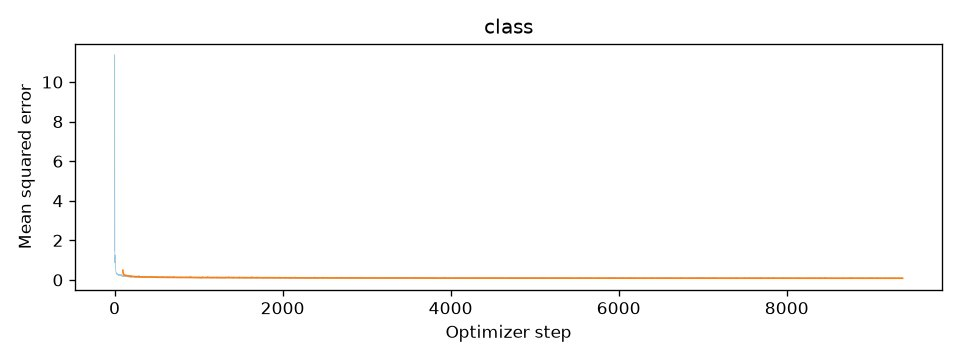
2.6 Sampling from the UNet
At each sampling step, I ask the model for a velocity with the requested label and another with the label blanked out. Guidance pushes the update toward what the label adds, helping the result match the digit I asked for. I used a guidance scale of 5 here, which is equivalent to w = 4 in Part A because the two formulas define the scale differently.
Each column below is one digit, 0 through 9, with four samples each. These look much cleaner than the time-only results, and by epoch five each column is recognizable as the requested digit. I also used more sampling steps here, so the class label isn't the only thing changing between the two runs.
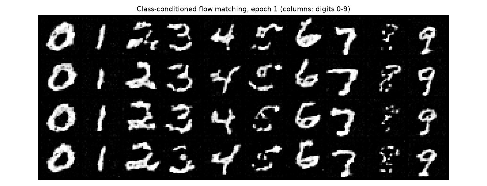
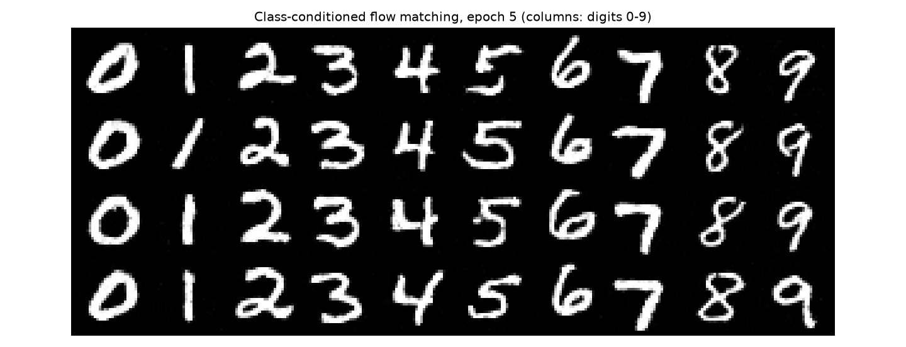
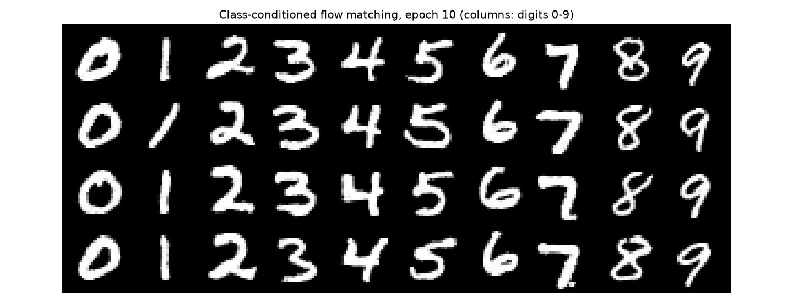
2.6 Experiment: removing the learning rate scheduler
Normally the learning rate gets smaller as training goes on. To try removing that scheduler, I trained a fresh model with a smaller learning rate of 0.001 and left it there the whole time. The idea was to take smaller updates from the start instead of waiting for the scheduler to bring them down.
By epoch ten the digits look about as good as with the scheduler, and the epoch-one grid even looks cleaner. Both models start with seed 2026 and use the same sampling noise, though their training batches aren't matched exactly.
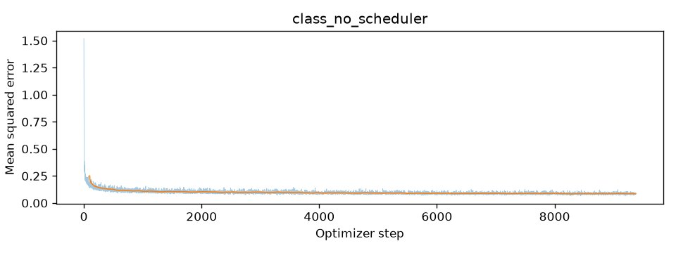
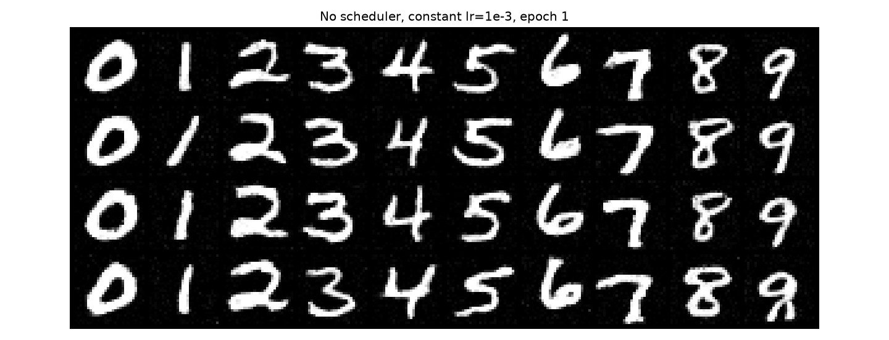
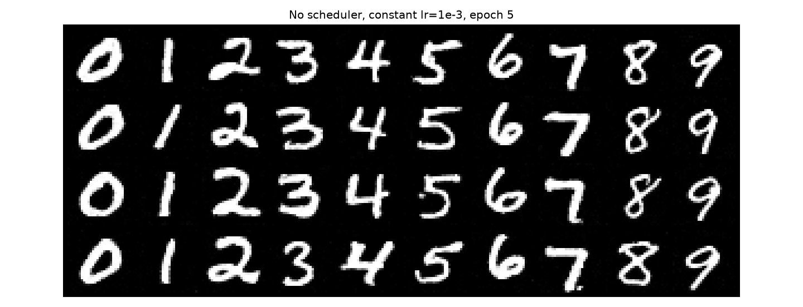
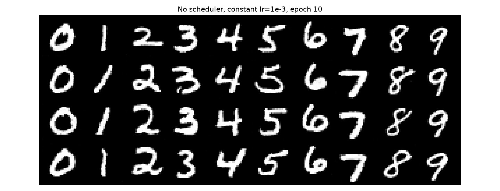
What I learned
The coolest part for me was seeing how much the model's habits matter. "A high quality photo" almost always meant a portrait to it, which explained why my landscape drawings kept failing and why drawing myself finally worked.
It was also really satisfying to build the small version in Part B and see the same ideas work at a tiny scale, from the blurry average digit you get with plain denoising to clean digits once the model learns to take small steps instead of one big guess.